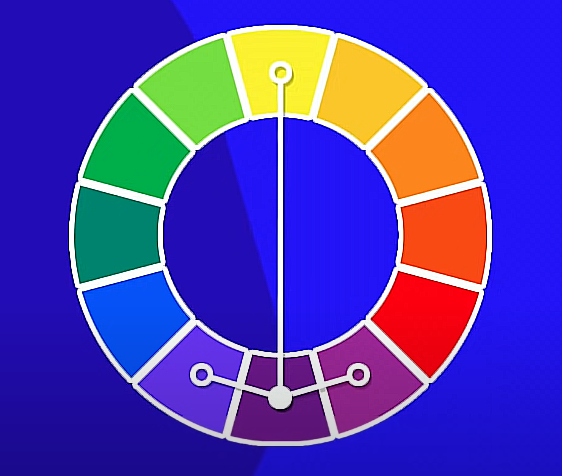

Harmonia das Cores
Círculo cromático
Cores complementares

Cores Análogas

Cores análogas junto de complementares
Cores análogas relacionadas

Cores intercaladas
Cores triádicas

Cores em quadrado

Cores tetrádicas

Monocromia